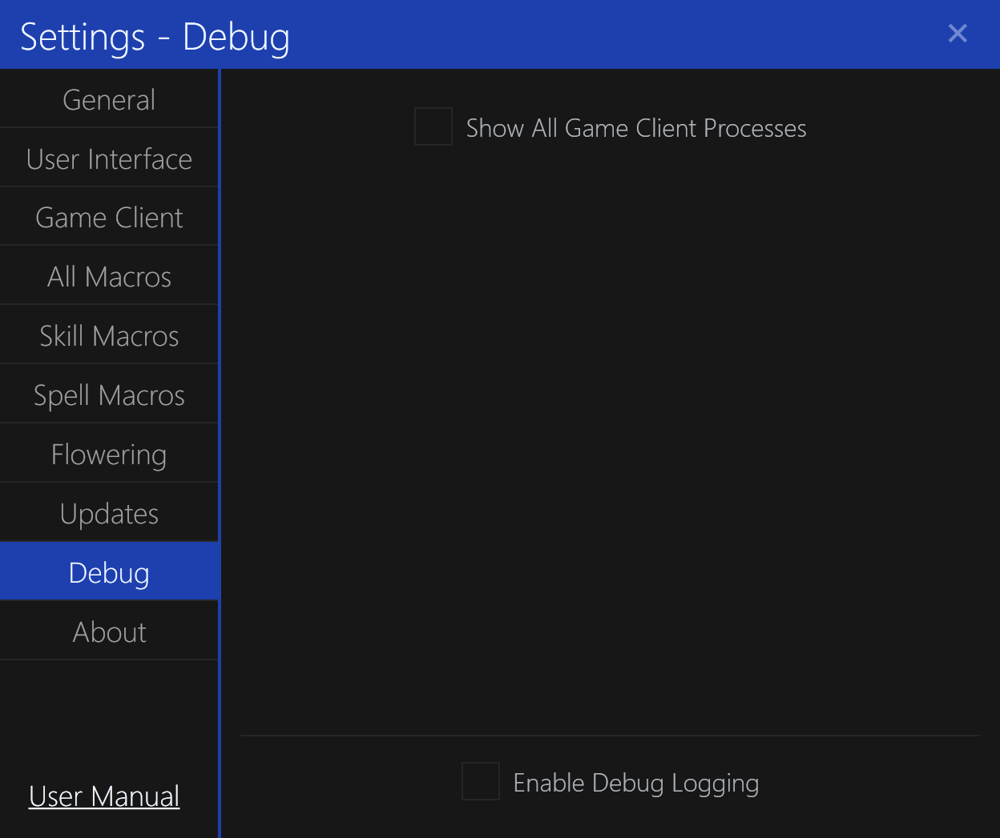

Debug Settings

The Debug settings tab contains settings for debugging the application, not intended for normal use.
Show All Game Processes
This setting determines whether the application will show all running Dark Ages clients, including those that are not logged into a character.
By default, this is Disabled.
This is useful for debugging the application when client instances are not being detected properly. Typically, this is used with custom Dark Ages clients testing client version variations.
Enable Debug Logging
This setting determines whether the application will write debug logs to the logs folder.
By default, this is Disabled.
This can be useful for debugging strange behavior in the application.